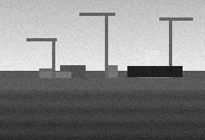
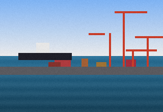
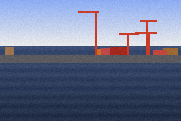
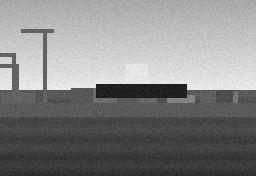
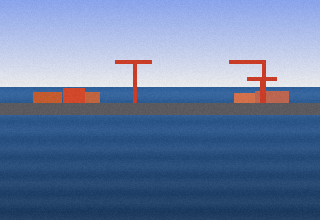
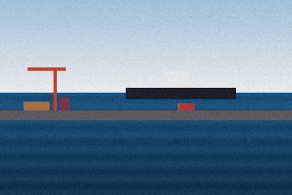

Reporting
27.1 Reports
Diagrams are provided for orientation only. This chapter does not describe the technical implementation; see the architecture notes for that. Questions about this chapter can be raised through the usual documentation feedback channel.
- A monthly berth occupancy report per terminal can be exported as CSV.
- No open comments on this item.
- Reviewed by the documentation owner.

29.0 Introduction
The behaviour described here was demonstrated in the prototype walkthrough. Terminology in this chapter is aligned with the glossary; where they differ, the glossary wins. Diagrams are provided for orientation only. This section was reviewed with the operations team during the second documentation workshop.
The wording below reflects the agreed position at the time of writing and may be refined in a later revision. Where the text says 'the system', it means the Harbour Berth Booking application as a whole.
29.9 Notes
This chapter does not describe the technical implementation; see the architecture notes for that. Paragraphs marked as guidance are explanatory and do not add obligations. The examples given are illustrative and use fictional vessel names throughout. Diagrams are provided for orientation only.

Gallery



